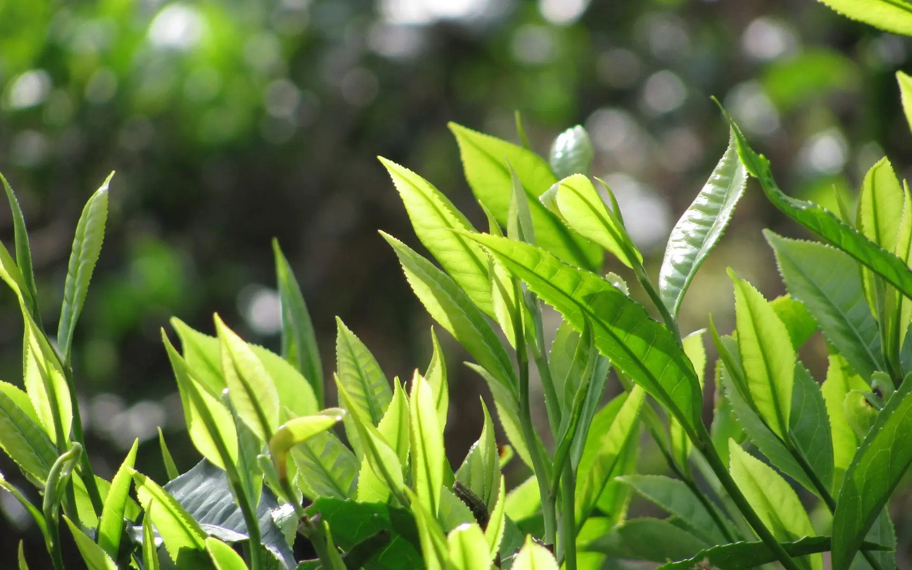
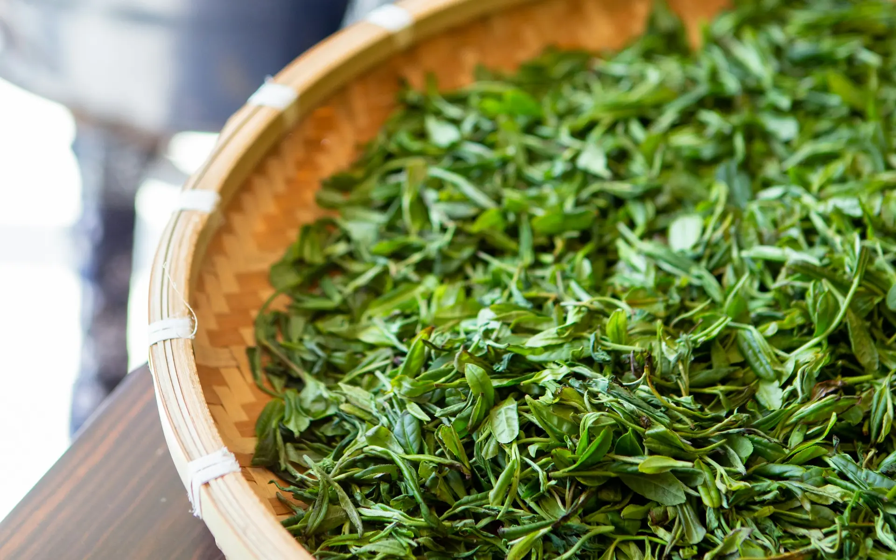

静岡・牧之原の台地から 一番茶の深蒸し煎茶
一番摘み霞かすみ
霧が晴れて、露が切れてから。
春の朝、台地をおおう霧が晴れ、葉の露が切れるのを待って摘みます。芽のそろった畑を選び、その日のうちに深く蒸しました。

一
一芯二葉のころに
枝の先の、まだ開ききらない芯と、その下の二枚の葉。芽の伸びがそろうこのころをねらって、やわらかい新芽を摘み取ります。若い葉には、うま味のもとになる成分が多いといわれます。
摘むのは、一番茶の季節のうちの数日だけ。

二
蒸して、揉んで
摘んだ葉は、その日のうちに蒸して葉の働きを止め、青くささを抜きます。牧之原の持ち味は、ふつうより長く蒸す深蒸し。渋みがおだやかで、こくのある味と、濃い緑の水色になります。
温かい風をあてながら揉み、少しずつ水分を抜いて形を整えます。深蒸しの葉は細かく、粉も少し混じるので、網の細かい急須がおすすめです。

三
湯は、少し冷ましてから
沸かした湯を湯呑みに移し、もう一度移しかえて（または湯冷ましで）七十〜八十度ほどに。急須に茶葉を入れ、湯を注いで、ふたをして待ちます。
- 茶葉
- 二人分で 約6g（小さじ山盛り2杯）
- 湯
- 約140ml・70〜80℃
- 待つ
- 約40秒（深蒸しは短めに）
四
最後の一滴まで
湯呑みに少しずつ回し注ぎ、最後の一滴まで出しきります。とろりとした、濃い緑の水色（すいしょく）。渋みはおだやかで、まろやかなこくが残ります。
二煎目は熱めの湯で、待たずにすぐ注いで。

五
一番摘み 霞
開けたら、茶筒のふたをしっかり閉めて。湿気とにおい移りをふせぎ、ひと月ほどで飲みきるのがおすすめです。
- 種類
- 煎茶（深蒸し）
- 産地
- 静岡県 牧之原の台地（架空の茶園）
- 内容量
- 80g・茶筒入り
- お値段
- 見本のため表示していません